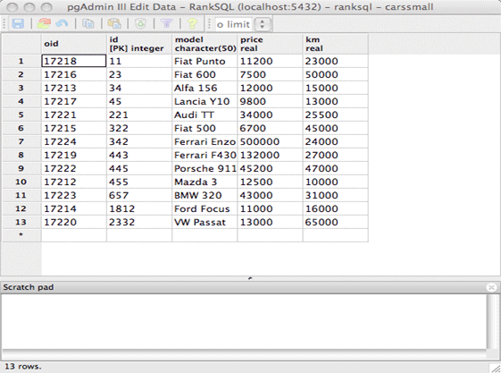
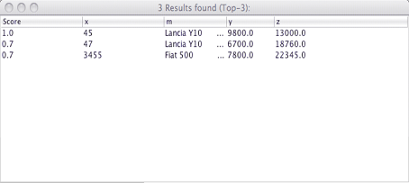

Cars Example:
Assume, that a car seller has a cars database and is selling second-hand cars. The data is sored into a relational table with signature carssmall (id[int] model[string] price[real] km[real]))

He would like to make it accessible via a small ontology (abstraction level). Assume that the definitions are as follows:
(MAP-ROLE CarsTable carssmall (id[int] model[string] price[real] km[real]))
This declares "CarsTable" to be an abstract n-ary relation, which refers physically to the "carssmall" table.
(MAP-ABSTRACT Car 1)
(MAP-ABSTRACT HasID 2)
(MAP-ABSTRACT HasMODEL 2)
(MAP-ABSTRACT HasPRICE 2)
(MAP-ABSTRACT HasKM 2)
These define abstract concepts and relations, Car, HasID, HasMODEL, HasPRICE, HasKM.
(IMPLIES (SOME [1] CarsTable) Car)
(IMPLIES (SOME [1 2] CarsTable) (SOME [1 2] HasMODEL))
(IMPLIES (SOME [1 3] CarsTable) (SOME [1 2] HasPRICE))
(IMPLIES (SOME [1 4] CarsTable) (SOME [1 2] HasKM))
These are axioms contribute in building the extension of the abstract relations.
We further have some scoring functions, such as the max, min, left-shoulder, right-shoulder, triangular and trapezoidal functions:
(DEF-MACRO max "CASE WHEN $1 > $2 THEN $1 ELSE $2 END")
(DEF-MACRO min "CASE WHEN $1 <= $2 THEN $1 ELSE $2 END")
(DEF-MACRO ls "CASE WHEN $3 <= $1 THEN 1 WHEN $3 >= $2 THEN 0 ELSE ($2 - $3)/($2 - $1) END")
(DEF-MACRO rs "CASE WHEN $3 <= $1 THEN 0 WHEN $3 >= $2 THEN 1 ELSE ($3 - $1)/($2 - $1) END")
(DEF-MACRO tri "CASE WHEN $4 <= $1 THEN 0 WHEN $4 >= $3 THEN 0 WHEN $4 <= $2 THEN ($4 - $1)/($2 - $1) ELSE ($3 - $4)/($3 - $2) END")
(DEF-MACRO trz "CASE WHEN $5 <= $1 THEN 0 WHEN $5 >= $4 THEN 0 WHEN $5 <= $2 THEN ($5 - $1)/($2 - $1) WHEN $5 <= $3 THEN 1 ELSE ($4 - $5)/($4 - $3) END")
The example ontology file can be found here.
Now, we would like to submit some queries:
For instance, the result of the last query is:

The example query file can be found here.